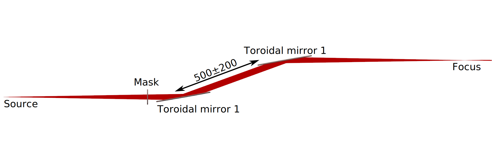

Some of these examples may be updated without warning
Some examples of stuff
This is the multi-page printable view of this section. Click here to print.
Some of these examples may be updated without warning
Some examples of stuff
This example configuration describes a refocusing setup comprised of two identical toroidal mirrors with a focal length of 500 and an angle of incidence of 80°. The beam from a point source is first cut to 35mrad by a circular mask, it then impacts the first toroidal mirror positionned one focal length away from the source. A second toroidal mirror is positionned at a variable distance away from the first one. The script will iterate over that distance to try to find the one that minimises the image focal spot size.

You can download the configuration file here:
CONFIG_2toroidals_f-x-f.py
Opening the configuration code, the first lines import the necessary modules, mostly from ARTcore.
import ARTcore.ModuleMirror as mmirror
import ARTcore.ModuleSupport as msupp
import ARTcore.ModuleProcessing as mp
import ARTcore.ModuleMask as mmask
import ARTcore.ModuleSource as mos
import ARTcore.ModuleOpticalChain as moc
import ARTcore.ModuleGeometry as mgeo
import ARTcore.ModuleDetector as mdet
import ART
import matplotlib.pyplot as plt
import numpy as np
As far as the raytracing program is concerned, a Source is simply a list of rays. To generate that list of rays we can use the SimpleSource class that is provided by ARTcore. It’s defined by several distributions:
The rays are then generated assuming that the distributions are independent. For more complicated sources such as sources where the intensity and angular distributions depend on the wavelength, the users are encouraged to write their own generator of rays.
In this particular example we’re going to assume a point source with a gaussian intensity distribution and a uniform cone directions distribution. The spectrum is uniform.
N_rays = 1000
Spectrum = mos.UniformSpectrum(lambdaMin=30e-6, lambdaMax=800e-6)
PowerDistribution = mos.GaussianPowerDistribution(1, 2, 50e-3)
Positions = mos.PointRayOriginsDistribution(mgeo.Origin)
Directions = mos.ConeRayDirectionsDistribution(mgeo.Vector([1,0,0]), 50e-3)
Source = mos.SimpleSource(Spectrum, PowerDistribution, Positions, Directions)
SourceRays = Source(N_rays)
After the source, the system has a circular mask.
SupportMask = msupp.SupportRoundHole(Radius=30, RadiusHole=15, CenterHoleX=0, CenterHoleY=0)
Mask = mmask.Mask(SupportMask)
MaskSettings = {
'OpticalElement' : Mask,
'Distance' : 400,
'IncidenceAngle' : 0,
'IncidencePlaneAngle' : 0,
'Description' : "Mask for selecting rays",
'Alignment' : 'support_normal',
}
The first step is to calculate the toroidal mirror parameters
Focal = 500
AngleIncidence = 80 #in deg
OptimalMajorRadius, OptimalMinorRadius = mmirror.ReturnOptimalToroidalRadii(Focal, AngleIncidence)
SupportToroidal = msupp.SupportRectangle(150, 32)
Then we can define the first mirror ToroidalMirrorA
ToroidalMirrorA = mmirror.MirrorToroidal(SupportToroidal, OptimalMajorRadius, OptimalMinorRadius)
ToroidalASettings = {
'OpticalElement' : ToroidalMirrorA,
'Distance' : Focal-MaskSettings['Distance'],
'IncidenceAngle' : AngleIncidence,
'IncidencePlaneAngle' : 0,
'Description' : "First parabola for collimation",
}
ToroidalMirrorB = mmirror.MirrorToroidal(SupportToroidal,OptimalMajorRadius, OptimalMinorRadius)
ToroidalBSettings = {
'OpticalElement' : ToroidalMirrorB,
'Distance' : None,
'IncidenceAngle' : AngleIncidence,
'IncidencePlaneAngle' : 180,
'Description' : "First parabola for collimation",
}
Det = mdet.InfiniteDetector(-1)
Detectors = {
"Focus": Det
}
ChainDescription = "2 toroidal mirrors in f-d-f config, i.e. approx. collimation, propagation, and the refocus "
Distances = np.linspace(Focal-200, Focal+200, 20)
FocalDistances = []
FocalSizes = []
for d in Distances:
ToroidalBSettings['Distance'] = d
print(d)
AlignedOpticalElements = mp.OEPlacement([MaskSettings, ToroidalASettings, ToroidalBSettings])
AlignedOpticalChain = moc.OpticalChain(Source(1000), AlignedOpticalElements, Detectors, ChainDescription)
RayListAnalysed = AlignedOpticalChain.get_output_rays()[-1]
Det.autoplace(RayListAnalysed, 390)
Det.optimise_distance(RayListAnalysed, [200,600], Det._spot_size, maxiter=10, tol=1e-14)
FocalDistances.append(Det.distance)
DetectorPointList2D = AlignedOpticalChain.get2dPoints()
DetectorPointList2DCentre = DetectorPointList2D - np.mean(DetectorPointList2D, axis=0)
FocalSpotSizeSD = np.std(DetectorPointList2DCentre.norm)
FocalSizes.append(FocalSpotSizeSD)
optimalDistance = Distances[np.argmin(FocalSizes)]
fig, ax = plt.subplots()
ax.plot(Distances, FocalSizes)
ax.set_xlabel('Distance between PM and Toroidal B [mm]')
ax.set_ylabel('Spot size [mm]')
ax.scatter(optimalDistance, np.min(FocalSizes), color='red')
plt.tight_layout()
ToroidalBSettings['Distance'] = optimalDistance
AlignedOpticalElements = mp.OEPlacement([MaskSettings, ToroidalASettings, ToroidalBSettings])
AlignedOpticalChain = moc.OpticalChain(Source(5000), AlignedOpticalElements, Detectors, ChainDescription)
rays= AlignedOpticalChain.get_output_rays()
Det.autoplace(rays[-1], FocalDistances[np.argmin(FocalSizes)])
Det.optimise_distance(rays[-1], [200,600], Det._spot_size, maxiter=10, tol=1e-14)
AlignedOpticalChain.render(EndDistance=Det.distance+10, OEpoints=5000, cycle_ray_colors=True, impact_points=True, DetectedRays=True)
AlignedOpticalChain.drawSpotDiagram(ColorCoded="Delay")
AlignedOpticalChain.drawCaustics()
print("Optimum found for following parameters:")
print(AlignedOpticalChain)
plt.show()